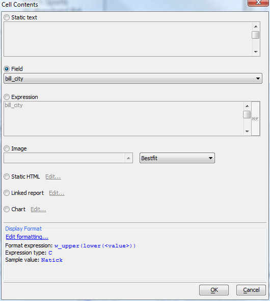
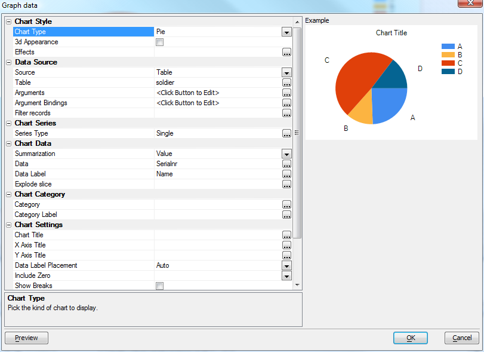

Embedding Charts in Reports
To embed a chart in a report, first create a new Quick Report, then save it as a Layout Table Report, using the Open in Report Editor button. In the Layout Table Report Designer, add a row to hold the chart, enlarge the row and merge enough cells to make room for the desired chart size, and add the chart to the layout by double-clicking in the large cell to bring up the Cell contents dialog.
Select the Chart radio button, click Edit..., and design your chart using the control. All the variables and summaries in the report and its underlying data will be available to the chart.

Videos
| Number | Category | Description |
| R1 | Reports - Embedded Charts | This video shows how charts can be embedded into an Alpha Anywhere
report.
|
| R2 | Reports - Adding a Chart to the Sample Invoice Report | In Video R1 we showed how you can add a chart to a report. In that
video, the data source for the chart was set to 'Table'. In this video
we show how a chart can be added to the sample 'Invoice' report in the
sample 'AlphaSports' application that ships with Alpha Anywhere.
In this video, the data source for the chart is set to 'Report', which means that the data used in the report is used for the chart, rather than a separate query. By setting the data source to 'Report' the chart can use all of the calculated fields and summary fields that the report calculates. |